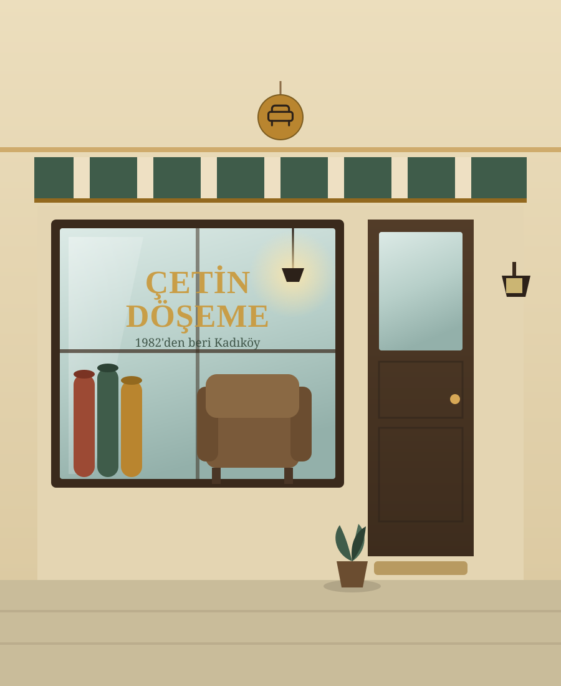

Koltuk Takımı
Klasik 3'lü Koltuk Yenileme
Yıpranmış kumaş kaplama, açık gri boucle kumaşla yenilendi.
Çetin Döşeme, Sinan Çetin'in dört kuşaktır süregelen bir zanaatı 1982'den bu yana Kadıköy'de sürdürdüğü bir usta atölyesidir. Koltuk, sandalye, araç ve ofis koltuğu döşemede özenli işçilik, kaliteli kumaş ve deri seçenekleriyle çalışıyoruz.

Koltuk takımından ofis koltuğuna, antika bir sandalyeden araç koltuğuna kadar her türlü döşeme işini aynı özenle üstleniyoruz.
Yıpranmış koltuk takımlarınızı söküp, sünger ve iç yapısını yenileyerek istediğiniz kumaş veya deriyle sıfırdan döşüyoruz.
Detayları gör →Yemek odası sandalyelerinden antika sehpalara kadar, orijinal desenlerine sadık kalarak restorasyon ve yeniden döşeme yapıyoruz.
Detayları gör →Otomobil, minibüs ve ticari araçlarda deri veya kumaş koltuk döşeme, yırtık/yanık onarımı ve renk değişimi hizmetleri sunuyoruz.
Detayları gör →Yıpranmış ofis koltuklarını, toplantı sandalyelerini ve bekleme salonu mobilyalarını dayanıklı kumaşlarla yeniliyoruz.
Detayları gör →Koltuklarınızla uyumlu perde, yastık ve örtü dikiminde kumaş seçiminden dikime kadar tüm süreci birlikte yürütüyoruz.
Detayları gör →Aile yadigârı koltuk ve sandalyeleri; ahşap iskeletini koruyarak, döneme uygun kumaşlarla özenle restore ediyoruz.
Detayları gör →Sinan Çetin'in elinden geçen her koltuk, ilk günkü titizlikle işleniyor. Kırk yılı aşkın tecrübe, her dikişte kendini gösteriyor.
Evinize veya işyerinize gelip mobilyanızı yerinde inceliyor, aynı gün net bir fiyat teklifi sunuyoruz.
Farklı bütçe ve zevklere uygun onlarca kumaş ve deri numunesi arasından birlikte seçim yapıyoruz.
Yaptığımız her döşeme işine garanti veriyoruz; kullanılan malzeme ve işçilikten tam olarak sorumluyuz.
Mobilyanızı yerinde inceliyor, iç yapısının durumunu ve ihtiyacınızı birlikte değerlendiriyoruz.
Numunelerden birlikte kumaş/deri seçiyor, aynı gün net fiyat ve süre teklifi veriyoruz.
Atölyemizde eski kaplamayı söküp, gerekiyorsa süngeri ve iskeleti yeniliyor, seçilen kumaşla döşüyoruz.
Mobilyanızı kararlaştırılan tarihte teslim ediyor, yapılan işçiliğe garanti veriyoruz.
Tamamladığımız projelerin tamamına galeri sayfamızdan göz atabilirsiniz.
Yıpranmış kumaş kaplama, açık gri boucle kumaşla yenilendi.
Çatlamış deri yüzey sökülüp orijinal desenine sadık kalınarak yenilendi.
Yırtılmış sürücü koltuğu, orijinaline uygun suni deri ile onarıldı.
"Annemden kalma berjeri restore ettirdik, sonuç beklediğimizden çok daha iyi oldu. Sinan Bey kumaşı seçerken de çok yardımcı oldu."
"Ofisimizdeki 12 toplantı sandalyesini bir haftada teslim ettiler. Fiyat da ilk konuştuğumuz gibi çıktı, sürpriz olmadı."
"Aracımın koltuğundaki yırtığı aynı gün onardılar, rengi orijinaliyle birebir. Kesinlikle tavsiye ederim."
Bize telefon veya WhatsApp'tan ulaşın, size en yakın zamanda ücretsiz keşif için gelelim.